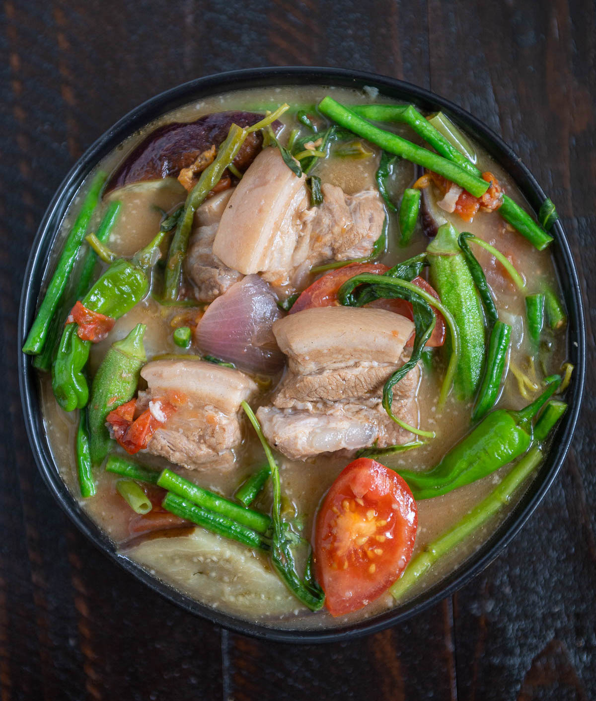

Pork Sinigang

Description
Probably my favourite Filipino dish growing up. For me, the more sour, the better but feel free to tweak it to your liking!
Ingredients
- 2 lbs pork belly
- 1 bunch spinach
- 3 tbsp fish sauce
- 12 pieces string beans sitaw, cut in 2 inch length
- 2 tomatoes, quartered
- 3 pieces chili or banana pepper
- 1 tbsp cooking oil
- 2 quarts water
- 1 onion, sliced
- 2 pieces taro gabi, quartered
- 1 pack sinigang mix, good for 2 litres water
Steps
- Heat the pot and add oil
- Sauté the onion until its layers separate from each other
- Add the pork belly and cook until outer part turns light brown
- Add the fish sauce and mix with the ingredients
- Pour the water and bring to a boil
- Add the taro and tomatoes, then simmer for 40 minutes or until pork is tender
- Add the sinigang mix and chili
- Add the string beans (and other vegetables if there are any) and simmer for 5 to 8 minutes
- Add spinach, turn off heat, and cover the pot Let the spinach cook using the residual heat.
- Serve hot. Share and enjoy!